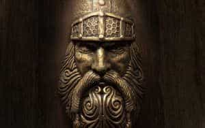
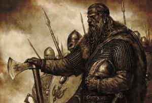

Michael is the author of Staying Married in a Degenerate Age. Follow him on Twitter or Facebook. You can read more of his writing at Honor and Daring.


Sometimes a crisis can force you to do things you never would have agreed to before. My step-father was 40 years when he had a heart attack. Up until that point he had been a two-pack-a-day smoker. No amount of pleading could make him quit, but after his heart attack he quit cold turkey and never looked back. It’s the same thing on a societal level—a crisis can change the course of a civilization forever.
We’ve reached such a crisis in Western civilization. Decades of leftist social engineering and replacement levels of immigration have turned Western man into atomized units devoid of spiritual purpose. But this crisis has caused a reaction within Western society. Men are starting to become aware of our dire situation and the events that led up to this point. We are also taking the first halting steps toward reversing the disease. One of these steps may be the return of the pagan mindset of our pre-Christian ancestors.

Christianity today has a reputation for being namby-pamby. Modern Christianity fights for feminism, egalitarianism, and third world immigration with the same ferocity as a Social Justice Warrior (SJW). It wasn’t always this way. When Christianity was at its height during the Middle Ages, the society that it created was hierarchical, not egalitarian. There was a threefold social order that consisted of the clergy, the nobility, and the people. Husbands and wives each had well-defined roles and divorce was forbidden. Medieval Christians would be shocked at modern Christians’ embrace of feminism and egalitarianism.
Medieval Christianity did not share the modern belief that everyone is good. Cities were built with walls and strong defenses, not because their inhabitants hated the people on the outside, but because they wanted to protect themselves and their posterity. The idea that Christians are obligated to take in hordes of Muslim immigrants would have been ridiculed by Christians of the past.
Even as late as the 20th Century, Christian leaders still recognized that peoples have a legitimate desire to guard their heritage.
Modern Christianity is pacifist in nature. Many churchmen oppose capital punishment and even modest means of self-defense. On the other hand, the Christians of the Middle Ages knew that the government bore the sword as an agent of God’s justice. Thus, they had no problem with administering capital punishment to those who deserved it. And when Christians in the Holy Land were consistently harassed by Muslims, the pope himself called for a crusade to seize back the land from the enemy.
There is such a big difference between modern Christians and Christians of the past that one has to ask, Which one of these was right? Which one represented true Christianity?

When I say pagan mindset, I don’t necessarily mean a return to pagan religions. To be sure there are some men who have rejected modern Christianity in favor of a more masculine paganism. The most common is adoption of some form of Germanic paganism. While I’ve seen some movement in that direction, I don’t expect the mass of Christians, nominal or fervent, to start worshiping Odin anytime soon. Rather, it is more likely that people will reject Christianity as being impractical for the forces that confront us.
The adoption of the pagan mindset will happen when people begin to realize that feminism, egalitarianism, and neoliberalism are not conducive to creating a healthy society. At that point, they will see that modern Christianity, which has adopted these “isms,” is not a solution but an obstacle preventing these problems from being resolved.
Modern Christianity has bought into feminist philosophy. While it doesn’t advocate for blue-haired harpies, it still pushes a leveling of husband and wife. It gives lip service to honoring motherhood but really embraces the idea of careerism for women. And modern Christian leaders would fight the return of patriarchy with as much vigor as the most extreme intersectional feminist.
When it comes to immigration from the third world, modern Christianity is even worse. Rather than calling for sane immigration policy where nations are permitted to have sovereign borders, it calls for Western nations to drop all border controls and admit everyone, even if they harbor an intense hatred of the West. Minor measures, like deporting criminal illegals, are stridently resisted. This opens up the citizens of Western nations to being the victims of unnecessary violence.

The viable pagan mindset would be a rejection of the forces that have brought us to this point. In place of egalitarianism and feminism, it would posit hierarchy and patriarchy. It would reject promiscuity for both men and women and re-embrace married life. In place of neoliberalism, that makes profit the only morality, it would value family and tribe above pure financial gain. Most importantly, the pagan mindset would sweep away the collective guilt that has prevented men from acting in their own best interest.
The downside of a pagan mindset is that it would be unchecked by Christian morality. This would open the door to the potential for ruthlessness.
As a Christian, my hope is that church leaders will stop trying to chase the secular culture, which is moving farther and farther to the left, and return to a healthy sense of justice and a well-ordered society. A Christian answer to the problems that face us would ensure any solutions that are implemented are done justly and, insofar as possible, mercifully. The ironic thing is that the right mindset is already part of the Christian tradition. All Christians would have to do is to reclaim their Medieval heritage.
But, barring some divine intervention, I don’t see that happening. While more and more people have been waking up to the grave problems that are besetting our culture, most Christian leaders continue to peddle cuckservatism or outright leftism. It is likely is that church leaders will continue to try to win over leftists until it is too late. Worse, church leaders, will probably continue to block even mild reforms thus making the final reaction much worse than it would need to be. If the pagan mindset does return, the blame for it will lie squarely with all the church leaders that made it a necessity.
Read More: Why Is Modern Christianity So Wimpy?